Corsi di cucina e cooking class a Torino e dintorni
Cooking class, corsi di pasta fresca, pane, pasticceria e cucine dal mondo a Torino, Cuneo e dintorni.
Cerca tutti i workshop78 attività in programma · aggiornato il 23 novembre 2026
 lun23novCucinaWorkshop di pizza: pizza e gin toniclunedì 23 novembre, 18:00–19:30Lingotto (TO) · 50 € · esauritocon Eataly Torino Lingotto
lun23novCucinaWorkshop di pizza: pizza e gin toniclunedì 23 novembre, 18:00–19:30Lingotto (TO) · 50 € · esauritocon Eataly Torino Lingotto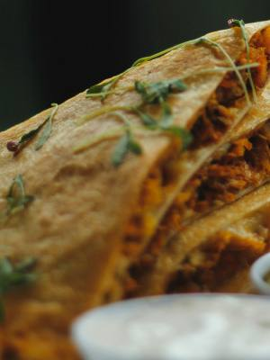
lun23novCucinaCooking class: aperitivo messicanolunedì 23 novembre, 19:30–22:30Centro (TO) · 85 €con STUDIOFOOD33 mar24novCucinaWorkshop di ramen: a tutto ramenmartedì 24 novembre, 17:30–19:30Lingotto (TO) · 65 € · esauritocon Eataly Torino Lingotto
mar24novCucinaWorkshop di ramen: a tutto ramenmartedì 24 novembre, 17:30–19:30Lingotto (TO) · 65 € · esauritocon Eataly Torino Lingotto gio26novCucinaCucina vegetale delle feste: menu veggiovedì 26 novembre, 17:30–20:30Lingotto (TO) · 75 € · esauritocon Eataly Torino Lingotto con Slow Food
gio26novCucinaCucina vegetale delle feste: menu veggiovedì 26 novembre, 17:30–20:30Lingotto (TO) · 75 € · esauritocon Eataly Torino Lingotto con Slow Food gio26novCucinaPaint Your Cake: torta dipintagiovedì 26 novembre, 19:00–21:00Centro (TO)con Limaco’s
gio26novCucinaPaint Your Cake: torta dipintagiovedì 26 novembre, 19:00–21:00Centro (TO)con Limaco’s gio26novCucinaCooking class: bento d’autunnogiovedì 26 novembre, 19:30–22:30Centro (TO) · 85 €con STUDIOFOOD33 con Tabete Market
gio26novCucinaCooking class: bento d’autunnogiovedì 26 novembre, 19:30–22:30Centro (TO) · 85 €con STUDIOFOOD33 con Tabete Market- dom29novCucinaFinger food asiatici: cucina di coppiadomenica 29 novembre, 09:30–12:30Lingotto (TO) · 160 € · esauritocon Eataly Torino Lingotto
 dom29novCucinaCooking class: gnocchidomenica 29 novembre, 14:30–16:30Lingotto (TO) · 65 €con Eataly Torino Lingotto
dom29novCucinaCooking class: gnocchidomenica 29 novembre, 14:30–16:30Lingotto (TO) · 65 €con Eataly Torino Lingotto- dom29novCucinaApericake: torta a tema Harry Potterdomenica 29 novembre, 17:30–19:30Rivoli (TO) · 50 €con Claudia Cakes per Container Les Delices
 lun30novCucinaWorkshop di gyoza: gyoza e birralunedì 30 novembre, 17:30–19:30Lingotto (TO) · 65 € · esauritocon Eataly Torino Lingotto con Chiara Lazzarin
lun30novCucinaWorkshop di gyoza: gyoza e birralunedì 30 novembre, 17:30–19:30Lingotto (TO) · 65 € · esauritocon Eataly Torino Lingotto con Chiara Lazzarin lun30novCucinaCooking class: cucina franceselunedì 30 novembre, 19:30–22:30Centro (TO) · 85 €con STUDIOFOOD33 con lo chef Patrik Lisa
lun30novCucinaCooking class: cucina franceselunedì 30 novembre, 19:30–22:30Centro (TO) · 85 €con STUDIOFOOD33 con lo chef Patrik Lisa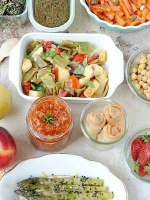
mar1dicCucinaBatch cooking dal mondo: cucinare in anticipomartedì 1 dicembre, 17:30–20:30Lingotto (TO) · 80 € · esauritocon Eataly Torino Lingotto mer2dicCucinaCucine dal mondo: i noodlesmercoledì 2 dicembre, 17:30–20:30Lingotto (TO) · 80 € · esauritocon Eataly Torino Lingotto
mer2dicCucinaCucine dal mondo: i noodlesmercoledì 2 dicembre, 17:30–20:30Lingotto (TO) · 80 € · esauritocon Eataly Torino Lingotto gio3dicCucinaIl pane di casa: farine e impastigiovedì 3 dicembre, 17:30–20:30Lingotto (TO) · 75 € · esauritocon Eataly Torino Lingotto con Slow Food
gio3dicCucinaIl pane di casa: farine e impastigiovedì 3 dicembre, 17:30–20:30Lingotto (TO) · 75 € · esauritocon Eataly Torino Lingotto con Slow Food ven4dicCucinaSpeciale Natale: regali da mangiarevenerdì 4 dicembre, 17:30–20:30Lingotto (TO) · 70 €con Eataly Torino Lingotto con Chiara Lazzarin
ven4dicCucinaSpeciale Natale: regali da mangiarevenerdì 4 dicembre, 17:30–20:30Lingotto (TO) · 70 €con Eataly Torino Lingotto con Chiara Lazzarin dal5dicCucinaABC della pasta fresca: corso baseda sabato 5 dicembre, 09:30–12:30Lingotto (TO) · 250 € · esauritocon Eataly Torino Lingotto
dal5dicCucinaABC della pasta fresca: corso baseda sabato 5 dicembre, 09:30–12:30Lingotto (TO) · 250 € · esauritocon Eataly Torino Lingotto- sab5dicCucinaDolci decorazioni: biscotti di Natalesabato 5 dicembre, 10:30–12:30Crocetta (TO) · 25 €con Aula44
- sab5dicCucinaWorkshop di kombucha: fermentare a casasabato 5 dicembre, 11:00–13:00Vanchiglia (TO)con Gizzy per Spazio Costanza
- sab5dicCucinaChristmas Cookies Lab: biscotti decoratisabato 5 dicembre, 14:30–17:30Pianfei (CN) · 25 €con Alter Ego
 sab5dicCucinaPizza Lovers: pizza di coppiasabato 5 dicembre, 14:30–17:30Lingotto (TO) · 160 € · esauritocon Eataly Torino Lingotto
sab5dicCucinaPizza Lovers: pizza di coppiasabato 5 dicembre, 14:30–17:30Lingotto (TO) · 160 € · esauritocon Eataly Torino Lingotto- dom6dicCucinaWorkshop di kombucha: fermentare a casadomenica 6 dicembre, 15:00–17:00Barriera di Stura (TO)con Gizzy per Avondo 20
 lun7dicCucinaWorkshop di ramen: a tutto ramenlunedì 7 dicembre, 17:30–19:30Lingotto (TO) · 65 € · esauritocon Eataly Torino Lingotto
lun7dicCucinaWorkshop di ramen: a tutto ramenlunedì 7 dicembre, 17:30–19:30Lingotto (TO) · 65 € · esauritocon Eataly Torino Lingotto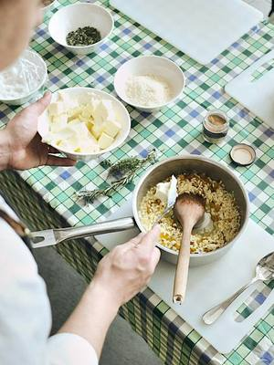
mer9dicCucinaCooking class: il risottomercoledì 9 dicembre, 17:30–20:30Lingotto (TO) · 80 €con Eataly Torino Lingotto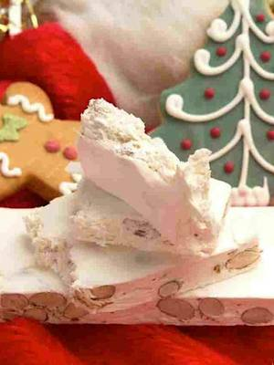
gio10dicCucinaIl cesto di Natale: regali golosigiovedì 10 dicembre, 17:30–20:30Lingotto (TO) · 80 €con Eataly Torino Lingotto ven11dicCucinaCooking class: pizza fatta in casavenerdì 11 dicembre, 17:30–20:30Lingotto (TO) · 75 € · esauritocon Eataly Torino Lingotto con Slow Food
ven11dicCucinaCooking class: pizza fatta in casavenerdì 11 dicembre, 17:30–20:30Lingotto (TO) · 75 € · esauritocon Eataly Torino Lingotto con Slow Food ven11dicCucinaCooking class: struffolivenerdì 11 dicembre, 17:30–20:30Lingotto (TO) · 70 €con Eataly Torino Lingotto
ven11dicCucinaCooking class: struffolivenerdì 11 dicembre, 17:30–20:30Lingotto (TO) · 70 €con Eataly Torino Lingotto- ven11dicCucinaMagic House: casetta di pasta frollavenerdì 11 dicembre, 20:00Borgaro Torinese (TO) · 40 €con Gabriela Duran Event e La Dolce Anita per Nikin House
- sab12dicCucinaLezione di pasticceria: torta di Natalesabato 12 dicembre, 14:30–17:30Lingotto (TO) · 90 € · esauritocon Eataly Torino Lingotto
 sab12dicCucinaPane con pasta madre: corso praticosabato 12 dicembre, 14:30–18:30Barriera di Milano (TO) · 50 €con Panacea Social Farm
sab12dicCucinaPane con pasta madre: corso praticosabato 12 dicembre, 14:30–18:30Barriera di Milano (TO) · 50 €con Panacea Social Farm dom13dicCucinaPasta fresca di Natale: impasti e ripienidomenica 13 dicembre, 14:30–17:30Lingotto (TO) · 70 € · esauritocon Eataly Torino Lingotto
dom13dicCucinaPasta fresca di Natale: impasti e ripienidomenica 13 dicembre, 14:30–17:30Lingotto (TO) · 70 € · esauritocon Eataly Torino Lingotto lun14dicCucinaWorkshop di gyoza: gyoza veg e birralunedì 14 dicembre, 17:30–19:30Lingotto (TO) · 65 € · esauritocon Eataly Torino Lingotto
lun14dicCucinaWorkshop di gyoza: gyoza veg e birralunedì 14 dicembre, 17:30–19:30Lingotto (TO) · 65 € · esauritocon Eataly Torino Lingotto mar15dicCucinaSfizi salati per le feste: cracker e grissinimartedì 15 dicembre, 17:30–20:30Lingotto (TO) · 80 €con Eataly Torino Lingotto
mar15dicCucinaSfizi salati per le feste: cracker e grissinimartedì 15 dicembre, 17:30–20:30Lingotto (TO) · 80 €con Eataly Torino Lingotto gio17dicCucinaLezione di pasticceria: biscotti da tègiovedì 17 dicembre, 17:30–20:30Lingotto (TO) · 90 €con Eataly Torino Lingotto
gio17dicCucinaLezione di pasticceria: biscotti da tègiovedì 17 dicembre, 17:30–20:30Lingotto (TO) · 90 €con Eataly Torino Lingotto- gio17dicCucinaPaint Your Cake: tortina a tema animegiovedì 17 dicembre, 19:00–21:00San Salvario (TO)con Limaco’s per Pièce Ramen
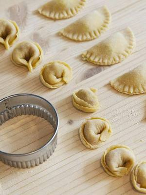
ven18dicCucinaPasta fresca di Natale: corso di coppiavenerdì 18 dicembre, 17:30–20:30Lingotto (TO) · 160 € · esauritocon Eataly Torino Lingotto- sab19dicCucinaXmas Cookie Lab: biscotti di Natalesabato 19 dicembre, 10:00–11:30Lingotto (TO) · 35 €con Jacopo Pistone per To Be Experience
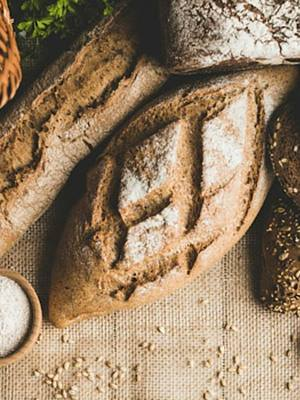
sab19dicCucinaABC dei lievitati: pane delle festesabato 19 dicembre, 14:30–16:30Lingotto (TO) · 120 €con Eataly Torino Lingotto lun21dicCucinaWorkshop di pizza: pizza e gin toniclunedì 21 dicembre, 18:00–19:30Lingotto (TO) · 50 €con Eataly Torino Lingotto
lun21dicCucinaWorkshop di pizza: pizza e gin toniclunedì 21 dicembre, 18:00–19:30Lingotto (TO) · 50 €con Eataly Torino Lingotto dal9genCucinaABC della cucina: corso baseda sabato 9 gennaio, 09:30–12:30Lingotto (TO) · 250 €con Eataly Torino Lingotto
dal9genCucinaABC della cucina: corso baseda sabato 9 gennaio, 09:30–12:30Lingotto (TO) · 250 €con Eataly Torino Lingotto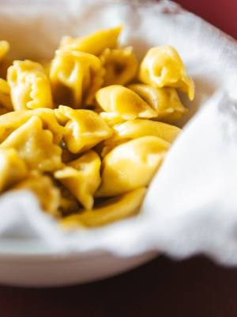
mar12genCucinaCooking class: plin, brasato e bunetmartedì 12 gennaio, 19:30–23:30Centro (TO) · 85 €con STUDIOFOOD33- lun18genCucinaCooking class: pizza al tegamino e farinatalunedì 18 gennaio, 19:30–23:30Centro (TO) · 75 €con STUDIOFOOD33
 mar19genCucinaCooking class: cucina romanamartedì 19 gennaio, 19:30–22:30Centro (TO) · 85 €con STUDIOFOOD33
mar19genCucinaCooking class: cucina romanamartedì 19 gennaio, 19:30–22:30Centro (TO) · 85 €con STUDIOFOOD33- mer20genCucinaCooking class: sushi e bollicinemercoledì 20 gennaio, 19:30–22:30Centro (TO) · 85 €con STUDIOFOOD33
- gio21genCucinaCooking class: ramengiovedì 21 gennaio, 19:30–22:30Centro (TO) · 85 €con STUDIOFOOD33 con Tabete Market
 sab23genCucinaCooking class: pasticcini freschisabato 23 gennaio, 14:30–17:30Centro (TO) · 85 €con STUDIOFOOD33
sab23genCucinaCooking class: pasticcini freschisabato 23 gennaio, 14:30–17:30Centro (TO) · 85 €con STUDIOFOOD33 dom24genCucinaSuper vegan brunch: brunch vegetaledomenica 24 gennaio, 09:30–12:30Lingotto (TO) · 80 €con Eataly Torino Lingotto
dom24genCucinaSuper vegan brunch: brunch vegetaledomenica 24 gennaio, 09:30–12:30Lingotto (TO) · 80 €con Eataly Torino Lingotto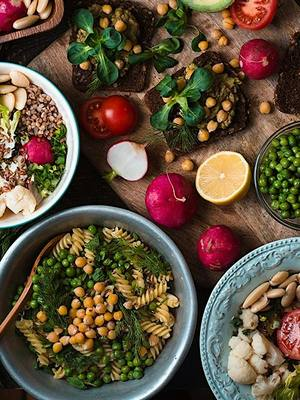
dom24genCucinaDetox con gusto: cucina depurativadomenica 24 gennaio, 14:30–17:30Lingotto (TO) · 80 €con Eataly Torino Lingotto con Caterina Mosca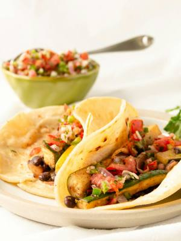
lun25genCucinaCooking class: Messico vegetarianolunedì 25 gennaio, 19:30–22:30Centro (TO) · 85 €con STUDIOFOOD33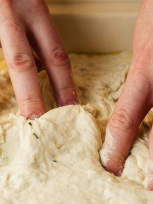
mar26genCucinaCooking class: pizza e focaccia liguremartedì 26 gennaio, 19:30–22:30Centro (TO) · 85 €con STUDIOFOOD33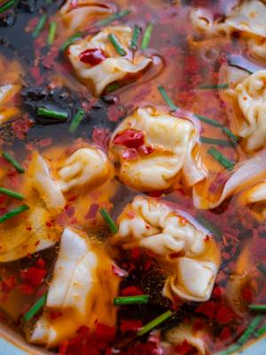
mer27genCucinaCooking class: cucina del Sichuanmercoledì 27 gennaio, 19:30–22:30Centro (TO) · 85 €con STUDIOFOOD33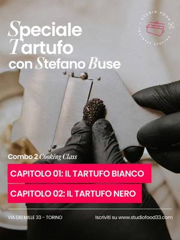
ven29genCucinaCooking class: tartufo nerovenerdì 29 gennaio, 20:00–23:00Centro (TO) · 150 €con STUDIOFOOD33 con lo chef Patrik Lisa lun1febCucinaCooking class: cucina sicilianalunedì 1 febbraio, 19:30–22:30Centro (TO) · 75 €con STUDIOFOOD33
lun1febCucinaCooking class: cucina sicilianalunedì 1 febbraio, 19:30–22:30Centro (TO) · 75 €con STUDIOFOOD33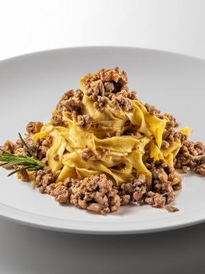
mar2febCucinaCooking class: tagliatelle e vitello tonnatomartedì 2 febbraio, 19:30–22:30Centro (TO) · 75 €con STUDIOFOOD33 con La Bottega di Mastro Taricco mer3febCucinaCooking class: cucina vietnamitamercoledì 3 febbraio, 19:30–22:30Centro (TO) · 85 €con STUDIOFOOD33
mer3febCucinaCooking class: cucina vietnamitamercoledì 3 febbraio, 19:30–22:30Centro (TO) · 85 €con STUDIOFOOD33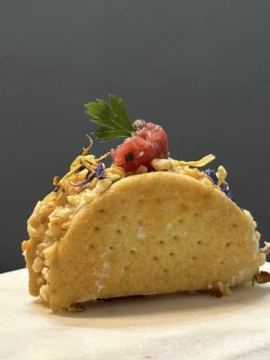
gio4febCucinaCooking class: pasticceria salatagiovedì 4 febbraio, 19:30–22:30Centro (TO) · 85 €con STUDIOFOOD33- sab6febCucinaCooking class: crostate modernesabato 6 febbraio, 14:30–18:30Centro (TO) · 85 €con STUDIOFOOD33
 lun8febCucinaCooking class: pizza e focaccia ligurelunedì 8 febbraio, 19:30–22:30Centro (TO) · 85 €con STUDIOFOOD33
lun8febCucinaCooking class: pizza e focaccia ligurelunedì 8 febbraio, 19:30–22:30Centro (TO) · 85 €con STUDIOFOOD33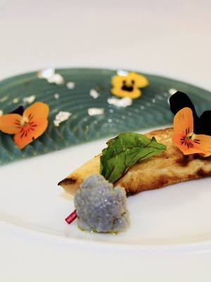
mar9febCucinaCooking class: antipasti gourmetmartedì 9 febbraio, 19:30–22:30Centro (TO) · 85 €con STUDIOFOOD33 mer10febCucinaCooking class: gyoza e birra giapponesemercoledì 10 febbraio, 19:30–22:30Centro (TO) · 85 €con STUDIOFOOD33
mer10febCucinaCooking class: gyoza e birra giapponesemercoledì 10 febbraio, 19:30–22:30Centro (TO) · 85 €con STUDIOFOOD33 dom14febCucinaLove is in the kitchen: cena di San Valentinodomenica 14 febbraio, 20:00–23:00Centro (TO) · 130 €con STUDIOFOOD33
dom14febCucinaLove is in the kitchen: cena di San Valentinodomenica 14 febbraio, 20:00–23:00Centro (TO) · 130 €con STUDIOFOOD33 mar16febCucinaCooking class: filetto alla Wellingtonmartedì 16 febbraio, 19:30–22:30Centro (TO) · 75 €con STUDIOFOOD33
mar16febCucinaCooking class: filetto alla Wellingtonmartedì 16 febbraio, 19:30–22:30Centro (TO) · 75 €con STUDIOFOOD33- mer17febCucinaCooking class: ramen e birra giapponesemercoledì 17 febbraio, 19:30–22:30Centro (TO) · 75 €con STUDIOFOOD33
- sab20febCucinaInsospettabilmente vegano: social cookingsabato 20 febbraio, 14:30–17:30Lingotto (TO) · 70 €con Eataly Torino Lingotto
- sab20febCucinaCooking class: torte da credenzasabato 20 febbraio, 14:30–18:30Centro (TO) · 85 €con STUDIOFOOD33
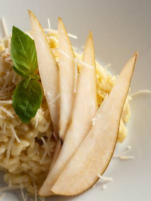
mar23febCucinaCooking class: battuta, risotto e bonetmartedì 23 febbraio, 19:30–22:30Centro (TO) · 75 €con STUDIOFOOD33 dal26febCucinaCooking class: il mondo vegetaleda venerdì 26 febbraio a sabato 3 aprile, 19:30Centro (TO) · 130 € per 2 seratecon STUDIOFOOD33 con le chef di RosaRegina
dal26febCucinaCooking class: il mondo vegetaleda venerdì 26 febbraio a sabato 3 aprile, 19:30Centro (TO) · 130 € per 2 seratecon STUDIOFOOD33 con le chef di RosaRegina mar2marCucinaCooking class: cucina libanesemartedì 2 marzo, 19:30–22:30Centro (TO) · 85 €con STUDIOFOOD33
mar2marCucinaCooking class: cucina libanesemartedì 2 marzo, 19:30–22:30Centro (TO) · 85 €con STUDIOFOOD33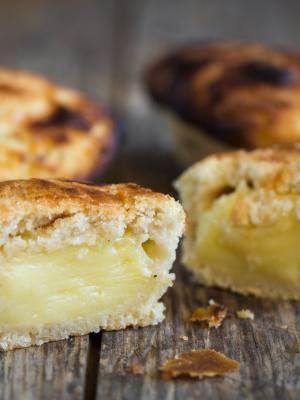
lun22marCucinaCooking class: cucina puglieselunedì 22 marzo, 19:30–22:30Centro (TO) · 75 €con STUDIOFOOD33 dataa sceltaCucinaCesarine: lezione di pasta a casaData a sceltaTorino · da 129 €con Cesarine
dataa sceltaCucinaCesarine: lezione di pasta a casaData a sceltaTorino · da 129 €con Cesarine dataa sceltaCucinaLaboratorio di cioccolato a Choco-StoryData a sceltaSan Salvario (TO) · da 39 €con Choco-Story Torino
dataa sceltaCucinaLaboratorio di cioccolato a Choco-StoryData a sceltaSan Salvario (TO) · da 39 €con Choco-Story Torino- dataa sceltaCucinaPasta fresca e tiramisù con uno chefData a sceltaSan Salvario (TO) · 75 €con Cook & Walk
 dataa sceltaCucinaLezione di cucina: pasta, pizza e tiramisùData a sceltaVanchiglia (TO) · da 65 €con Forchette a sinistra
dataa sceltaCucinaLezione di cucina: pasta, pizza e tiramisùData a sceltaVanchiglia (TO) · da 65 €con Forchette a sinistra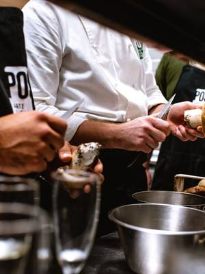
ognilunCucinaA lezione di cucina: con lo chefOgni lunedìTorino · 60 € a lezionecon Edoardo Cipollaro per Kreative Club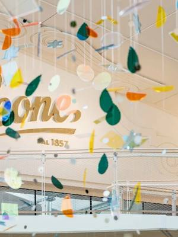
dataa sceltaCucinaFabbrica della Felicità: cioccolato LeoneData a sceltaCollegno (TO) · 35 €con Leone 1857 datada definireCucinaIl Gusto del Mondo: cucina vegetaleData da definireTorino · 50 €con Masala Studio
datada definireCucinaIl Gusto del Mondo: cucina vegetaleData da definireTorino · 50 €con Masala Studio datada definireCucinaIl Viaggio delle Spezie: ricette vegetaliData da definireTorino · 50 €con Masala Studio
datada definireCucinaIl Viaggio delle Spezie: ricette vegetaliData da definireTorino · 50 €con Masala Studio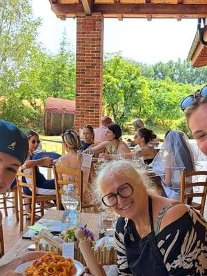
dataa sceltaCucinaPasta fresca in cantina: tagliatelle e viniData a sceltaVillarbasse (TO) · da 108 €con Vignaiole Prever- datada definireCucinaCorso di cake design: pasta di zuccheroData da definireCentro (TO)con Maria Cocciolo per Polo Le Rosine